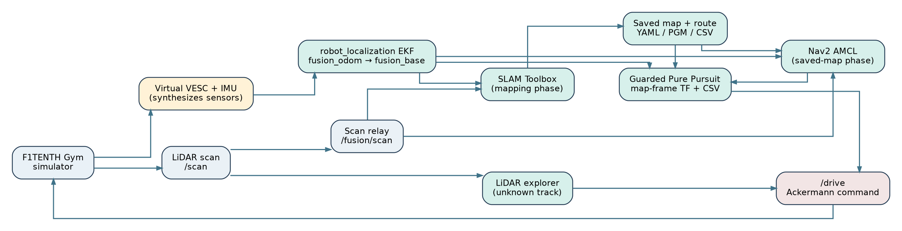
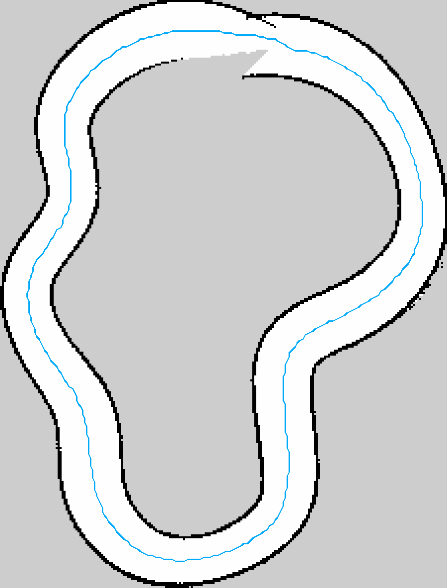
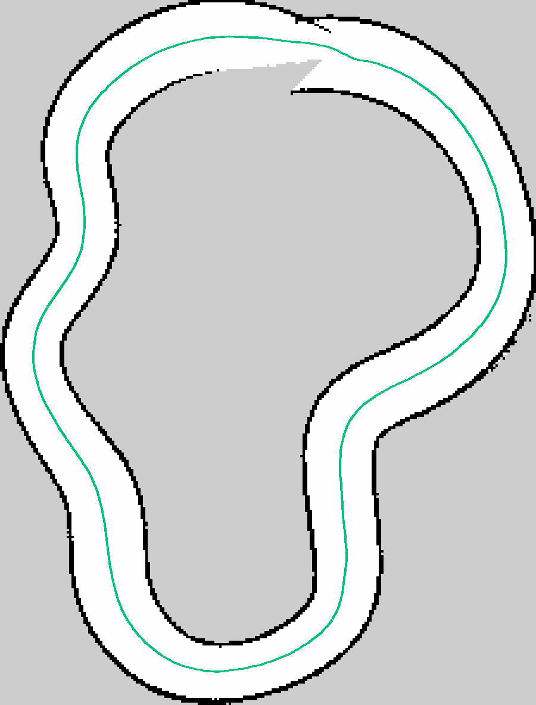
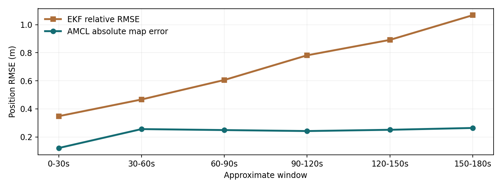
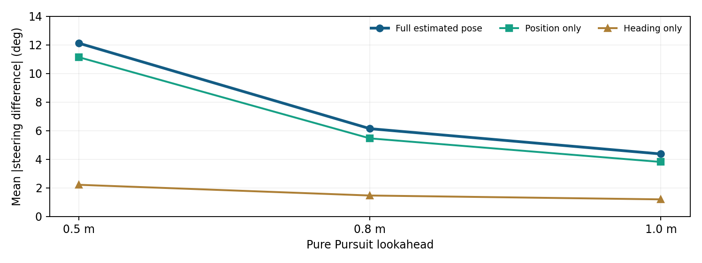
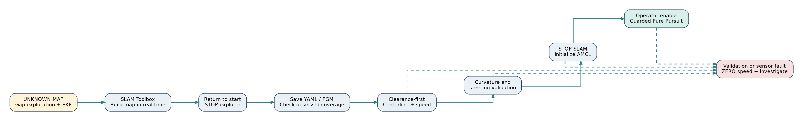

Engineering development, SLAM mapping, localization, control, experiments and transition to the physical car
28 October 2026
Project objective. Develop a reproducible research and engineering platform for a 1/10-scale Ackermann-steered autonomous vehicle. The complete target mission is: enter an unfamiliar closed circuit; use LiDAR to navigate a first exploratory lap; construct a metric occupancy map with SLAM; detect and validate a loop; extract a drivable closed trajectory and speed profile; use wheel/IMU odometry and LiDAR-based localization on that saved map; and autonomously traverse the circuit. The simulation work is also the commissioning environment for the University of Jordan F1TENTH physical prototype.
Assessment at the end of 28 October 2026. The system has demonstrated (1) LiDAR-only local navigation in an initially unmapped simulator circuit, (2) SLAM map saving, (3) a valid clearance-first 377-point, 37.67 m centerline recovered from the first mapping lap, (4) a kinematically feasible 37.58 m variant checked against a 24-degree steering constraint, (5) independent simulated wheel/IMU fusion with an EKF, (6) AMCL map localization, and (7) a complete separate known-map estimated-pose autonomous lap at 0.35 m/s. A resumed autonomous attempt on the newly explored and recovered map progressed to waypoint 56/377 at 0.15 m/s, then stopped on cross-track error and stale AMCL pose. The combined exploration-to-racing mission has not yet completed an end-to-end autonomous lap. No physical car actuation or real-sensor commissioning is claimed.
Three principal contributions. First, the team decoupled simulator truth from the navigation estimator: noisy VESC-like velocity and IMU angular-rate measurements are fused by robot_localization, and AMCL corrects the local odometry with a saved LiDAR map. Second, the first-lap mission connects exploration, SLAM, map saving, centerline extraction, map-relative localization and Pure Pursuit into one software workflow with explicit state gates. Third, a failure on a genuine saved SLAM map led to a clearance-first path-extraction method and an independent steering-feasibility correction. The corrected path was evaluated against real occupied/unknown grid cells rather than by artificially clearing unobserved areas.
Research integrity. Every reported measurement is labeled by test conditions. Ground-truth odometry is still present in the simulation for an oracle baseline and for the sensor emulator, but it is not used as the driving state in the estimated-pose controller. Estimated cross-track error is not equivalent to measured simulator-truth tracking error. A grid-based 0.30 m centerline clearance is not a guarantee of 0.30 m clearance around the full car body.
| Milestone | Status | Evidence / limitation |
|---|---|---|
| Technical simulator and Foxglove | Demonstrated | Gym bridge, map and ROS topics available |
| Known-track Pure Pursuit with oracle state | Demonstrated | 5 consecutive laps, 26.5 s in earlier setup; later ~29.2 s at reduced profile |
| Generated and saved first SLAM track | Demonstrated | .yaml + .pgm; original serialized graph
also saved in earlier workflow |
| Wheel/IMU emulator and EKF | Demonstrated in simulation | Biased/unbiased tests; no physical VESC telemetry yet |
| AMCL map localization | Demonstrated with limitations | Typical 0.21-0.25 m error; occasional severe localization failure |
| Estimated-pose closed-loop known-map lap | Demonstrated | Complete lap, 0.35 m/s, safety-gated, 344-point reference |
| First-lap autonomous unknown-track traversal | Demonstrated once | 34.422 m estimated odometry travel; return within 0.85 m |
| Clearance-first generated map route | Demonstrated offline | 377 points, 37.67 m, 0.30 m sampled grid clearance |
| Feasible steering route | Geometrically validated | 377 points, 37.579 m, <=21.43 deg peak dense-sampled steering |
| New-map resumed autonomous lap | Partial / blocked | Stopped at index 56/377, estimated CTE 0.170 m; AMCL then stale |
| Physical Jetson/LiDAR/VESC/servo integration | Not established here | Bench bring-up, calibration, independent E-stop required |
The simulator is not merely a visualization: it provides a repeatable test bench for the perception, estimation, planning and control software before hardware risk is introduced. We can vary track width and shape, LiDAR characteristics, steering and speed, odometry noise and bias, map completeness, localization initialization and controller gains. It gives deterministic oracle measurements for evaluation, while a separate constrained estimated-state pipeline can be tested independently. The same ROS topic and frame interfaces are intended to transfer to a Jetson.
There are three distinct navigation problems. Exploration selects a locally traversable direction when no global map/route is available. SLAM estimates a map while resolving pose drift and loop closure. Localization and racing use a validated saved map and a path in its coordinate frame to perform controlled laps. Confusing these stages led to previous map-frame errors and unsafe path choices, so the mission runs them in strict phases.
The planned platform is a roughly 1/10-scale Ackermann car with approximately 0.3302 m wheelbase. Planned hardware includes Jetson Orin Nano 8 GB (Ubuntu 22.04 and ROS 2 Humble), LakiBeam L1 LiDAR, a VESC-compatible brushless motor controller (Makerbase VESC MINI 6.7 Pro candidate), a brushless propulsion motor (DYS D3542 1450 KV candidate), a high-torque FT5330M steering servo, and an IMU whose final model and calibration remain to be fixed. These are the intended integration targets, not proof of installed or tested electrical interfaces. The steering servo needs an independent appropriately rated supply and a validated PWM signal path; Jetson GPIO is not a drop-in servo-power supply.
The development stack currently uses a simulator sensor emulator rather than the actual VESC, IMU or LakiBeam. The motor gear ratio, wheel diameter, pole pairs, encoder count and servo endpoints must be measured or validated on the real chassis rather than copied blindly from simulation constants.
| Component | Current setup / role |
|---|---|
| OS | Ubuntu Linux development laptop; ROS 2 Humble |
| ROS workspace | ~/f1tenth_sim |
| Shell | zsh; source scripts/sim_env.zsh |
| ROS domain | ROS_DOMAIN_ID=42 |
| RMW | rmw_cyclonedds_cpp |
| Python | Workspace .venv, ROS 2 Python libraries and scientific
stack |
| Simulator | f1tenth_gym through ROS bridge
(f1tenth_gym_ros) |
| Visualization | Foxglove via ROS Foxglove bridge on WebSocket 8765 |
| Estimation | robot_localization EKF, Nav2 AMCL,
slam_toolbox |
| Mapping | Occupancy-grid .yaml and .pgm, optional
serialized SLAM graph |
| Planning | NumPy, SciPy, scikit-image, Pillow and PyYAML |
| Repository | https://github.com/EngZaq/f1tenth_uj_sim |
As checked on 28 October, the public main branch pointed
to commit 68ec82891f593d87b9626352cc21576b7270200a from 27
October. Its README still describes an earlier phase. The newer mission,
EKF, AMCL and route artifacts exist in the local workspace/packages and
must be committed from the laptop before the remote can be described as
up to date. The physical-car codebase is a separate repository,
EngZaq/f1tenth_uj, and should not be confused with this
simulator workspace.
~/f1tenth_sim/
scripts/ Environment, simulator, combined launchers
sim_env.zsh Source ROS + venv + DDS settings
run_sim.zsh Gym + bridge + Foxglove
run_autonomous_amcl_sim.zsh Known-map estimated-pose controller launcher
run_unknown_track_mission.zsh Exploration -> mapping -> handoff
run_resume_saved_track.zsh Resume the generated map after simulator restart
src/f1tenth_control/ Original racing Pure Pursuit ROS package
tools/
exploration/ Gap-following and experimental arc planners
fusion/ VESC/IMU sensor emulator, evaluation
localization/ Scan relay, AMCL experiments, shadow comparison
planning/ Centerline, registration, speed-profile tools
mission/ First-lap watcher, mission runner, saved-map resume
config/ EKF, simulated sensor, AMCL, SLAM settings
maps/ Simulator track fixtures
reference/generated/ Known-map path and speed profile
results/mapping/ Generated historic SLAM map / graph
results/localization/ EKF/AMCL, shadow and controller CSV results
results/missions/20261028_112407/
new_track.yaml First-lap SLAM metadata
new_track.pgm First-lap occupancy raster
lap_pose.json Loop detection and SLAM-frame finish pose
new_track_centerline.csv Clearance-first path, original orientation
new_track_mission_forward.csv Explorer travel direction
new_track_speed_profile.csv Planned conservative velocities
new_track_mission_forward_feasible.csv Corrected route
new_track_preview.png Map/path visual evidence
new_track_diagnostic.png Earlier failed extraction diagnosis
resume_*/ Saved-map driving attempt logsROS build/, install/, log/,
.venv/ and Python caches are generated, and should not be
committed. src/f1tenth_gym_ros/ is ignored as a separately
managed simulation dependency in the current repository; clean clone
reproducibility requires documenting how that dependency is obtained and
built.

First lap, unknown map. The local explorer reads
/scan directly and chooses a collision-averse direction,
publishing /drive only in the simulator. The
virtual VESC/IMU producer converts simulation state into noisy
wheel-speed and yaw-rate sensor messages. The EKF estimates
fusion_odom -> fusion_base. The independent scan relay
gives /fusion/scan the fusion_laser frame.
SLAM Toolbox consumes fused local odometry and LiDAR and owns
slam_map -> fusion_odom; it publishes the mapping
occupancy grid on /mission/slam_map. A first-lap watcher
measures loop-return conditions from EKF/SLAM, not from oracle
odometry.
Saved-map lap. Stop SLAM Toolbox before starting
AMCL; otherwise the same slam_map -> fusion_odom TF edge
may have competing publishers. AMCL and the map server load the saved
new_track.yaml, consume /fusion/scan and fused
odometry, and own the global map correction. The driving controller asks
TF for slam_map -> fusion_base, computes Pure Pursuit in
the identical map frame as the generated route, and publishes
/drive with a watchdog and explicit operator enable.
Oracle branch. /ego_racecar/odom is
simulator ground truth. It is allowed into the sensor emulator to
synthesize readings and into evaluation tools to calculate errors. It is
not allowed directly into the estimated-pose steering or first-lap path
planner. The old oracle controller intentionally uses it as a baseline
and must never run concurrently with the estimated-pose controller.
| Name | Message / transform | Purpose |
|---|---|---|
/scan |
sensor_msgs/msg/LaserScan |
Simulator laser; ego_racecar/laser frame |
/fusion/scan |
sensor_msgs/msg/LaserScan |
Rate-controlled scan in fusion_laser frame |
/ego_racecar/odom |
nav_msgs/msg/Odometry |
Privileged simulator reference/evaluation |
/odometry/filtered |
nav_msgs/msg/Odometry |
EKF fused local odometry |
fusion_odom -> fusion_base |
TF | Local odometry transform; EKF owner |
fusion_base -> fusion_laser |
Static TF | Relay laser extrinsic, currently +0.275 m x |
/mission/slam_map |
nav_msgs/msg/OccupancyGrid |
Current first-lap SLAM map |
/fusion/localization_map |
nav_msgs/msg/OccupancyGrid |
Saved occupancy map for AMCL |
/amcl_pose |
geometry_msgs/msg/PoseWithCovarianceStamped |
Global map-relative pose + covariance |
slam_map -> fusion_odom |
TF | SLAM during mapping OR AMCL afterward |
/drive |
ackermann_msgs/msg/AckermannDriveStamped |
Simulator actuation; exactly one active publisher |
/amcl_drive/enable |
std_msgs/msg/Bool |
Operator enable/disable gate |
/ego_racecar/collision |
std_msgs/msg/Bool |
Simulator collision event / stop latch |
/initialpose |
geometry_msgs/msg/PoseWithCovarianceStamped |
Optional pose reset; Foxglove can publish |
Laser-frame caveat. The observed
ego_racecar/base_link -> ego_racecar/laser_model URDF
visual transform was [+0.096,0,+0.122] m, whereas
fusion_base -> fusion_laser currently uses
[+0.275,0,0] m. However /scan was actually
stamped ego_racecar/laser, not
laser_model. Therefore these two measurements alone do not
establish that the LiDAR relay is wrong; the actual laser ray origin and
physical mount still require verification. Mapping and scan-based
startup currently depend on a consistent +0.275 m assumption, so do not
change only one component.
Bicycle kinematics (planar approximation):
x_dot = v cos(psi), y_dot = v sin(psi),
psi_dot = v tan(delta)/L.
Pure Pursuit chooses a target point at arc-length lookahead along the
path. In vehicle coordinates, let its lateral offset be y_L
and Euclidean distance d_L; commanded steering is
delta = atan(2 L y_L / d_L^2), saturated to the steering
limit. The value L here denotes wheelbase; lookahead
distance is a different parameter. At shorter lookahead the same 0.1-0.2
m position error can create much larger steering differences.
Geometric path feasibility uses
delta_required = atan(L * kappa) where kappa
is path curvature. A smooth path can be free of obstacles yet demand
more curvature than the car can steer. The path planner therefore checks
both known-free-space clearance and curvature/steering
feasibility.
For planning speed, a curvature-limited candidate is
v <= sqrt(a_y_max/|kappa|) and is further constrained by
forward-acceleration and reverse-braking passes. The generated profile
is a planning artifact; early estimated-pose tests deliberately
use a lower constant speed cap, not this optimized
profile.
The repository and development archives contain an oval-debug
fixture, a technical-loop track (uj_technical_loop_v1), and
generated centerlines. The technical simulator loads
maps/uj_technical_loop_v1.yaml; its bridge begins near
(-5.80,-2.10,2.17 rad). A scaled simulator map for
visualization was observed at 720 x 480 cells with
0.025 m resolution. This is not the SLAM
occupancy grid.
The earlier known-track SLAM result lives under
results/mapping/uj_technical_slam_01.yaml and
.pgm: 287 x 183 cells, resolution
0.05 m, origin [-7.17,-4.44]. Historical
saved SLAM artifacts included .posegraph (~30 MB) and
.data (~8.4 MB). The known-track centerline has
344 waypoints and an accompanying speed profile. For
oracle racing only, a registered simulator-frame path was generated; the
approximate SLAM-to-simulator rigid rotation is -2.2434
degrees and translation [+0.1397,-0.1590] m. This
registration is not used to localize the physical car.
During the first fully integrated unknown-track attempt, the system
saved the map at
results/missions/20261028_112407/new_track.yaml and
new_track.pgm: 225 x 296 cells,
0.05 m resolution, and origin
[-6.61,-13.6,0]. These are real output artifacts from the
integrated mapping run, not an imported pre-existing track path.

A standalone first-lap detector recorded 34.422 m
EKF-estimated travel, 229.2 s elapsed, 0.85
m odometric distance to the departure location and 14.0
degrees return heading discrepancy. It saved a final pose
approximately (-4.299,-0.636,0.776 rad) in the
slam_map frame, after mapping settled. The return-to-start
condition does not itself prove that the optimizer detected a globally
consistent loop closure; map closure and path validation are separate
acceptance tests.
The V3 clearance-first extractor recovered a 37.67 m, 377-point centerline with a minimum 0.30 m grid-sampled distance from unknown/occupied cells and zero sampled crossings. It oriented the path to the explorer’s actual travel direction, with 0.3-degree starting-heading mismatch. The length discrepancy against 34.422 m odometric travel reflects that the numbers describe different geometries/estimators, and is not by itself a failure.
The generated path initially exceeded the car’s steering limit at four waypoints; dense sampling showed an equivalent peak command above 40 degrees in the raw path. The steering-feasible correction created a 37.579 m route, still 377 waypoints, changing points by at most 0.041 m. Its independent verification output reported 21.43 degrees peak required steering at 5 mm sampling, 0.300 m minimum sampled grid clearance, and zero occupied/unknown intersections. This is a geometrically feasible simulation route, not a guarantee of safe real-world clearance under localization error.

A ROS occupancy map is a paired YAML and raster: YAML gives image
filename, meters/cell, origin and occupancy thresholds; the PGM encodes
white known-free, black occupied and gray unknown cells. The saved YAML
must resolve the saved raster path. A centerline CSV is seven
semicolon-separated values per waypoint:
s_m;x_m;y_m;psi_rad;kappa_1pm;vx_mps;ax_mps2; comment lines
begin #. The separate speed-profile CSV records index,
distance, XY, curvature, raw and planned speed. A lane centerline exists
in slam_map coordinates, so every estimated-pose controller
must use the map-frame variant, never simulator-frame registered
waypoints.
The baseline environment, compatible technical/oval map packages, exploration proof of concept and SLAM mapping were assembled. Initial map-derived centerline and speed profile were built, and a frame mismatch was discovered when a SLAM-frame path was treated as simulator-frame coordinates. A simulator-assisted registration resolved the oracle-reference collision, but was recognized as a simulation-only development aid. The initial Pure Pursuit algorithm provided repeated low-error laps under privileged oracle pose. RF2O laser odometry, command-bicycle odometry and SLAM localization were investigated as independent pose candidates.
The 27 October engineering log documents five oracle racing laps at ~26.5 s with ~0.026 m mean CTE under one speed setting; a later lower-speed baseline measured ~29.2 s with ~0.027-0.028 m CTE. Earlier synchronized RF2O estimates were smooth but drifted, while direct SLAM localization produced occasional large pose jumps; simply increasing scan rates or replacing odometry with integrated commands did not solve this. This motivated the VESC-like wheel-speed and IMU emulator, EKF, map-relative AMCL particle filter, and paired logging strategy. A correct known-map frame alignment was established instead of accepting offline truth-based fixes in the production localization chain.
The EKF and AMCL were tested under both unbiased and deliberately
biased simulated sensors. The shadow controller compared AMCL steering
to oracle steering without acting on the simulator. A TF comparison
showed that fresh combined TF barely improved mean disagreement,
disproving a simplistic “use the latest transform” fix. Decomposed,
timestamp-matched tests isolated position error as the main cause of
steering sensitivity. Nevertheless, the guarded AMCL-controlled
known-map driver completed an estimated lap at 0.35
m/s: its log reached waypoint 341/344 and recorded
ESTIMATED LAP 1 COMPLETE.
The system then attempted an actual first-lap mission: LiDAR explorer + EKF + SLAM Toolbox built a new map; the loop detector stopped the explorer; the map server saved occupancy artifacts. The original skeleton extractor failed on branches. A spur-pruned V2 still failed a valid-clearance check, showing one candidate with 0.05 m clearance. Inspection of the actual saved grid led to the V3 clearance-first extractor, which produced the safe-zone centerline. A further curvature correction made the route kinematically feasible. A restart-aware map-scan matching initializer replaced blind reuse of the historical lap-finish pose. In the subsequent resumed drive at 0.15 m/s, the car reached waypoint 56/377 and stopped because estimated CTE reached 0.170 m, exceeding the configured threshold (0.12 m), followed by AMCL pose staleness. The stopped vehicle did not resume. Thus the integrated path is available but the new-map autonomous lap remains pending.
A result is meaningful only with its input state source, map/frame, profile, speed cap, lookahead, run duration and whether the CTE is computed using oracle or estimated pose. We report localization absolute map-registered error separately from relative first-pose-aligned error, and do not substitute relative error for global correctness. Evaluators may read simulator truth offline; the production controller should not.
| Experiment | Key outcome | Qualification |
|---|---|---|
| Early oracle lap sequence | 26.584, 26.537, 26.551, 26.540, 26.528 s | Five consecutive lower-CTE laps; ~1.29 m/s mean commanded speed |
| Oracle lower-speed baseline | ~29.17-29.20 s/lap, mean CTE 0.027-0.028 m | 344-point registered path, ~1.18 m/s mean command |
| Oracle lookahead 0.8 m | 29.018 s; mean CTE 0.044 m; max CTE 0.096 m | Faster in that run but larger mean CTE than 0.5 m |
| Earlier RF2O synced | 1,549 samples; mean relative position error 0.285 m | Smooth estimated motion; not robust global map localization |
| Earlier SLAM synced | 554 samples; mean position error 0.649 m, max 1.806 m | 3 apparent >3 m/s pose jumps, peak 17.33 m/s from corrections |
These were not matched controlled trials; speed setting, time and estimator configuration differed. They are development evidence, not statistical superiority claims.

In a roughly 176.2-second, 1,304-sample biased-sensor stress run, EKF
relative position RMSE was 0.764 m, while AMCL absolute
map-registered RMSE was 0.246 m (maximum 0.432
m, 95th percentile 0.390 m). The paired AMCL
relative RMSE was 0.442 m, a distinct
first-common-pose-aligned metric; do not compare that directly to
absolute EKF values. Successive 30-second windows showed EKF relative
RMSE increasing approximately
[0.348,0.467,0.606,0.782,0.892,1.068] m, whereas AMCL
absolute error stayed approximately
[0.121,0.256,0.249,0.242,0.251,0.264] m. This supports the
intended complementary roles of local odometry and global map
corrections on the known technical loop. It does not demonstrate
immunity from incorrect map hypotheses.
A separate ~31.8-second unbiased run had AMCL absolute map-registered RMSE about 0.236 m. Mean map path cross-track deviation of AMCL estimates was ~0.114 m, with a substantial along-track offset component. Offline lag analysis suggested about -0.10 s shift improved retrospective RMSE (0.236 to 0.205 m), but no oracle-based correction was introduced into online navigation.

| Test | Mean absolute disagreement | 95th percentile | Interpretation |
|---|---|---|---|
| Raw AMCL vs oracle, 0.5 m lookahead | 11.96 deg | 22.76 deg | Position sensitivity significant |
| TF-fused vs oracle, 0.5 m lookahead | 11.84 deg | 22.21 deg | Only ~0.13 deg improvement; TF age not root cause |
| Decomposition, 0.5 m lookahead | 12.12 deg | 22.22 deg | 534 synchronized moving samples |
| Decomposition, 0.8 m lookahead | 6.14 deg | 11.15 deg | Less sensitive; may cut more corners |
| Decomposition, 1.0 m lookahead | 4.37 deg | 7.78 deg | Lowest steering disagreement, not necessarily best CTE |
In the 534-sample decomposition run, average AMCL position error was 0.223 m, heading error 2.03 deg, and mean timestamp match error 1.4 ms. With 0.5 m lookahead, position-only steering error averaged 11.14 deg and heading-only averaged 2.21 deg. These error effects are not additive because Pure Pursuit is nonlinear. A separate failure run briefly produced 8.771 m mean position error and 136.22 deg heading error; repeated clean initialization returned to ~0.22 m. The cause of that transient gross mislocalization remains unresolved.
| Milestone / metric | Recorded result |
|---|---|
| First-lap explorer enabled speed | Typically 0.11-0.18 m/s |
| Estimated first-lap distance | 34.422 m |
| First-lap duration | 229.2 s |
| Return positional difference | 0.85 m in local odometry |
| Return heading mismatch | 14.0 deg |
| Saved occupancy grid | 225 x 296 at 0.05 m/cell |
| V1 extractor | Failed: skeleton not a simple loop |
| V2 extractor | Failed: min grid clearance 0.05 m on one collision-free sample path |
| V3 clearance-first output | 377 points, 37.67 m, 0.30 m sampled clearance |
| Steering-feasible variant | 377 points, 37.579 m; 21.43 deg max dense-sampled steering |
| New-map estimated drive | 0.15 m/s; waypoint 56/377 before stop |
| Primary stop reason | Estimated CTE 0.170 m, exceeding 0.12 m configuration |
| Subsequent stop reason | AMCL pose stale (over 13 s in supplied log) |
| Concurrent frontal scan range at stop | ~0.55-0.57 m; not the trigger for the logged CTE stop |
Interpretation of latest stop. The controller’s safety gate correctly commanded 0 speed rather than driving through an uncertain position. After it stopped, pose freshness failed; this may be related to the AMCL update policy for a stationary robot, but the supplied log does not prove why updates ceased. The CTE spike can reflect path tracking, localization correction, narrow geometry, wrong seed or a mixture. The log does not demonstrate collision, nor does it prove the map is universally raceable. Do not increase the CTE threshold or suppress stale-pose checks just to complete a lap.

Phase A - enter exploration. Assert
/drive has no other publisher, all relevant nodes start
cleanly and simulator track exists. Start simulated VESC/IMU, EKF, relay
and SLAM Toolbox. Enable existing LiDAR gap-following explorer. No map
is required as a path-planning input. The vehicle observes forward laser
geometry and chooses a conservatively inflated feasible gap. The
first-lap watcher records distance from an EKF origin, time since start,
proximity to start and heading convergence. This is a track-loop
heuristic, not generic map exploration.
Phase B - stop and commit map. When first-lap
criteria are satisfied, explorer enters a persistent 20 Hz zero-velocity
command state. Let SLAM settle, capture current global pose, call Nav2
map saver on /mission/slam_map, and verify paired
.yaml/.pgm files exist. Reaching the start
does not automatically mean all unknown cells are observed.
Phase C - compute track route. Perform occupancy classification. Compute a distance-to-occupied-or-unknown grid. Erode to a known-free planning region with nominal 0.30 m clearance. Skeletonize that safe region, remove short dead-end spurs, search for closed-cycle candidates, choose an appropriate track-scale loop, smooth and resample, and validate dense path samples against occupied/unknown space. Orient the path according to the explorer travel tangent and generate curvature and speed profile. Verify steering demand with the car’s wheelbase and max steer, correcting infeasible tight segments only inside validated free space.
Phase D - hand off localization. Stop SLAM Toolbox
so it relinquishes slam_map -> fusion_odom. Start Nav2
map server and AMCL against the just-saved occupancy grid. When
continuing without resetting the simulator, capture a recent
map-frame finish pose; when the simulator has restarted, do not reuse it
as the current pose. Instead use the current /fusion/scan
to match against the recovered map, bounded by a plausible initial
region, and confirm AMCL agrees with the seed before arming.
Phase E - guarded autonomous lap. Start the
controller disabled, check pose/scans/odometry freshness, covariance,
map-relative CTE, forward clearance, collision flag, pose jumps and
duplicate /drive publishers. After an explicit user enable,
publish low-speed Pure Pursuit commands and track estimated waypoint
progress. Stop on an estimated complete lap or any fault. The controller
is currently simulation-only.
cd ~/f1tenth_sim
zsh scripts/run_sim.zshIn a separate zsh terminal:
cd ~/f1tenth_sim
source scripts/sim_env.zsh
ros2 topic info /drive
ros2 topic echo --once /ego_racecar/odom --field pose.poseBefore enabling a controller, verify that /drive has
zero competing publishers. Do not combine a legacy oracle controller,
explorer and AMCL driver. Foxglove is available through the simulator
bridge; the browser visualization map and the SLAM map may be in
different TF frames.
cd ~/f1tenth_sim
source scripts/sim_env.zsh
python3 src/f1tenth_control/f1tenth_control/racing_pure_pursuit.py \
--ros-args \
-p waypoints_file:="$HOME/f1tenth_sim/reference/generated/uj_technical_slam_01_registered.csv" \
-p speed_profile_file:="$HOME/f1tenth_sim/reference/generated/uj_technical_slam_01_speed_profile.csv" \
-p results_file:="$HOME/f1tenth_sim/results/localization/oracle_baseline.csv" \
-p use_speed_profile:=true \
-p speed_scale:=1.0 \
-p lookahead_distance:=0.5The controller uses /ego_racecar/odom and the
registered simulator-frame path. Use this to benchmark
controller quality and to compare later estimated-state methods, not as
proof of perception autonomy.
Run each command in a separate sourced terminal following the simulator:
python3 tools/fusion/sim_vesc_imu.py --ros-args \
--params-file config/fusion_sim_sensors_unbiased.yaml
ros2 run robot_localization ekf_node --ros-args \
--params-file config/fusion_ekf.yaml
python3 tools/localization/fusion_scan_relay.py
ros2 launch tools/localization/fusion_amcl.launch.pyThese are four independent long-running processes; do not paste all sequentially into one terminal and expect the later commands to start. Verify:
ros2 lifecycle get /fusion_map_server
ros2 lifecycle get /amcl
ros2 topic hz /fusion/scan
ros2 service list -t | grep nomotion
ros2 topic echo --once /amcl_pose --field pose.poseBoth lifecycle nodes should show active [3];
/fusion/scan was typically ~8.1-8.4 Hz. With AMCL active, a
stationary update can be requested via
ros2 service call /request_nomotion_update std_srvs/srv/Empty '{}'.
If no AMCL node exists, that service will not exist: the simulator’s own
map server is not AMCL.
With old nodes stopped, use two terminals:
# Terminal A
cd ~/f1tenth_sim
zsh scripts/run_sim.zsh
# Terminal B
cd ~/f1tenth_sim
zsh scripts/run_autonomous_amcl_sim.zshAfter the launcher verifies the stack and prints its stopped/disabled
prompt, use Enter to enable simulation-only control. It
uses slam_map path, AMCL+EKF TF and a conservative 0.35 m/s
cap. A lap was observed as ESTIMATED LAP 1 COMPLETE. Always
run the launcher only with the known-map configuration; it must not be
used with a different path without confirming matching map and initial
pose.
After stopping every prior stack:
# Terminal A
cd ~/f1tenth_sim
zsh scripts/run_sim.zsh
# Terminal B
cd ~/f1tenth_sim
zsh scripts/run_unknown_track_mission.zshThe mission asks for Enter to start exploration. It then stops the
explorer after its first-lap condition, saves a map and tries to
generate a path. If path extraction fails, do not bypass
clearance or allow racing. The first run saved
results/missions/20261028_112407/new_track.* but did not
automatically complete a second AMCL lap; that stage was repaired
separately.
cd ~/f1tenth_sim
source scripts/sim_env.zsh
python3 tools/mission/recover_saved_map.py \
results/missions/20261028_112407After installation of the V3 clearance-first extractor, this produced
377 map-frame waypoints. The feasible-route package adds
new_track_mission_forward_feasible.csv alongside, without
replacing the original path. The verifier for the feasible route checks
saved-map hashes and dense clearance/curvature. It does
not validate AMCL initialization or real-life collision
clearance.
# Terminal A
cd ~/f1tenth_sim
zsh scripts/run_sim.zsh
# Terminal B
cd ~/f1tenth_sim
zsh scripts/run_resume_saved_track.zshThe runner starts emulator + EKF + scan relay, scans the
live environment to seed localization near the saved map,
launches AMCL against new_track.yaml, and loads
new_track_mission_forward_feasible.csv. The operator must
enable driving. Current conservative settings are 0.15
m/s, max estimated path error 0.12 m, and
front stop distance 0.5 m. The last recorded run
stopped at 56/377 because estimated CTE reached 0.170
m, followed by stale AMCL pose. Treat this as the reproducible starting
point for the next development session, not a completed lap.
Use Ctrl+C in the active mission/controller terminal,
then stop its simulator terminal. Confirm that the /drive
topic no longer has an active nonzero-command publisher and that the
relevant AMCL/SLAM nodes exited. Publishing a single zero message is
useful but not a fail-safe physical emergency stop. Do
not enable the physical motor controller until the hardware safety chain
is separately commissioned.
| Package or tool | Purpose | Present maturity |
|---|---|---|
UJ_F1TENTH_Ready_Maps.zip / compatible maps |
Technical and debug oval simulator tracks and map metadata | Map fixtures |
f1tenth_sim_runbook.zip |
Environment sourcing, simulator launch and checks | Baseline developer tooling |
F1TENTH_VESC_IMU_EKF_Simulation.zip |
Simulated VESC/gyro messages, EKF params, metrics evaluation | Simulated sensors only |
amcl_shadow_pure_pursuit.py |
Compute shadow control from AMCL; never publish
/drive |
Diagnostic |
amcl_tf_shadow_compare.py |
Raw AMCL pose vs latest TF lookahead steering A/B | Diagnostic |
steering_error_decomposition.py |
Isolate position-only and yaw-only steering errors | Diagnostic |
amcl_autonomous_sim_package.zip |
Actual low-speed, guarded AMCL/EKF simulator /drive
controller |
Demonstrated known-map lap |
unknown_track_to_amcl_mission.zip |
Orchestrated explore/map/plan/localize/drive sequence | Mapping phase demonstrated; full second lap pending |
unknown_track_map_fix.zip |
Spur pruning; saved-map offline recovery | Superseded V1 |
unknown_track_map_fix_v2.zip |
Progressive spline/linear smoothing with clearance diagnosis | Failed safely on first actual saved map |
uj_track_recovered_v3.zip |
Clearance-first erosion, skeleton, cycle extraction | Demonstrated on actual map |
uj_feasible_route_fix.zip |
Kinematic curvature correction and 5-mm verification | Geometric validation demonstrated |
uj_saved_map_resume.zip |
Restart-aware scan-to-map initialization and AMCL driving | Partial recovered-map driving to waypoint 56 |
Package ZIPs are development-delivery artifacts, not a substitute for a clean source repository. The GitHub repository should contain the installed source files, configurations and curated reference outputs, while older incremental ZIPs and failed prototypes can live under an archival release or dated development documentation.
Frame mismatch and oracle registration. A SLAM-frame centerline is geometrically displaced from the simulator frame; feeding the wrong file to the wrong controller caused collision. Correction: keep explicit map-frame paths for AMCL and simulator-frame paths only for the oracle baseline, with registration recorded but not used as a localization substitute.
RF2O vs SLAM pose instability. Smooth local odometry can drift without a global correction; map localization can produce implausible position discontinuities. Correction: combine physically inspired wheel/IMU EKF with AMCL global updates and measure absolute errors. Still unresolved: occasional incorrect global hypotheses.
Initial AMCL pose and stop/restart. A static
initialized pose may be valid only at the simulator’s original spawn.
/initialpose can receive messages from Foxglove, but mere
presence of a publisher is not evidence of an unwanted reset.
Correction: require clean startup checks and use live
LiDAR scan matching to seed restarted saved-map navigation.
Unresolved: test robust global localization under more
distant starting points.
Skeleton topology. A perfect one-pixel cycle was too strict: observed free-space skeletons contain branches and spurs. Correction: prune dead ends and seek closed candidates. This alone did not solve the true clearance failure.
Path clipping and unknown wedge. V2 gave 0.05 m clearance despite smoothing changes; the observed upper-track map had an unknown wedge and small occupied patch. Correction: V3 forms the clearance-constrained planning region first, then finds a cycle. It never erases unknown cells. Result: 0.30 m sampled grid clearance.
Steering infeasibility. The initial V3 route could demand >40 degrees instantaneous steering, even though grid clearance passed. Correction: local 4.1-cm path adjustment and dense curvature verification reduced demanded steering to 21.43 degrees under configured geometric assumptions.
Current resumed-lap failure. The system stopped at CTE 0.170 m, threshold 0.12 m, while the front range was around 0.56 m. Then AMCL pose timestamps became stale. Safe status: STOPPED; do not simply disable guards. Next action is to analyze where and when the CTE grew and how AMCL behaved just before the stop, and to check simulator-truth CTE in offline evaluation. A good route and a healthy pose estimate are both required.
ROS shutdown exceptions. Several Python diagnostic
nodes displayed Failed to publish log message to rosout or
an rclpy publisher-context error during shutdown. Those occurred after
CSV summaries were saved and are not evidence of vehicle-control
failure. Long-term code quality should make shutdown idempotent and
avoid publishing after rclpy.shutdown().
| Test category | Candidate experiments and measurements |
|---|---|
| Perception | LiDAR dropout, field of view, angle resolution, finite vs infinite returns, noise, extrinsic bias |
| Exploration | Completion ratio, path length, collisions, dead-end recovery, unknown-sector coverage, simulated speed |
| SLAM | Map completeness, loop-closure drift, repeated-map overlap, occupied/unknown classification, map quality |
| Planning | Erosion margin sweep, number of cycle candidates, free-space continuity, corner smoothing, curvature feasibility |
| Sensor fusion | Velocity scale bias, gyro bias, wheel slip model, noise seeds, odometry drift and covariance realism |
| Localization | AMCL particle counts, initial-pose tolerance, multi-modal failures, wrong-hypothesis recovery, update frequency |
| Control | Pure Pursuit lookahead and speed, lateral/heading error, steering saturation, path completion, oscillations |
| Safety | Stale scan, stale AMCL, lost odometry, out-of-bounds CTE, collision
latch, duplicate /drive publisher |
| Reliability | Long-run memory/cpu use, repeatability under multiple seeds, ROS restart behavior, TF ownership |
| Sim-to-real | Hardware actuator dynamics, braking distance, parameter identification, extrinsic sensitivity |
For each experiment record: exact code commit, map SHA, YAML config, noise seed, start pose, duration, speed cap, lookahead, frame names, controller owner, collision count, trajectory and ground-truth evaluation metrics. Run each condition over multiple seeds before making statistical claims. A monitor’s estimated CTE alone is insufficient for safety evaluation; in simulation use separately logged oracle CTE and clearance for offline assessment.
Document the actual assembled bill of materials, power rails,
connectors and current ratings. Verify the Jetson supply, VESC
power/wiring, motor phase wires and hall/encoder interface if present,
battery fuse, independently powered steering-servo rail, command
electrical levels, emergency-stop authority and thermal behavior. Keep
propulsion wheels lifted during initial electrical checks. Use a
physical kill switch and motor-controller watchdog, not just Python
speed commands. Never connect an untested simulation /drive
publisher directly to a motor driver.
Bring up Jetson ROS 2 Humble; acquire LakiBeam L1 scans into a stable
LaserScan topic; verify scan timestamps/rates/ranges and
the physical laser extrinsics; connect VESC using its supported
interface (USB/UART candidate), check ERPM, current and fault telemetry;
generate a limited drive command in a dedicated actuator bridge; command
steering through a rated PWM interface and servo power. Confirm
steering-center, endpoint angles, Ackermann sign conventions, propulsion
direction, measured wheel speed and emergency stop. Record everything in
a hardware test log.
Calibrate motor pole-pair count, transmission ratio and wheel
effective radius and transform VESC ERPM into road speed. Calibrate IMU
axes, sign, gyro bias and noise while stationary and while turning. Run
robot_localization EKF with actual
sensors, not the simulation emulator. Compare to independent
measurements over known distances/turns; estimate covariance
realistically and validate TF (odom -> base_link). Keep
speeds very low and the area clear.
Use the same LiDAR and EKF interfaces for SLAM Toolbox mapping. First
map a controlled small loop with remote/supervised motion, check loop
closure, save .yaml/.pgm plus serialized graph
where useful, and validate clearances using the real car footprint
and uncertainty budget. After SLAM stops, switch global TF
ownership to AMCL on the saved map. Test reinitialization, ambiguous
corridor segments and loss-of-localization handling before any
autonomous lap.
Transfer only verified route, controller and watchdog functionality; substitute real actuator adapter and sensors; use a human supervisor and hardware emergency stop. Begin at walking speed on a broad clear corridor with a robust stop margin. Add front-obstacle checks based on the real measured footprint and stopping distance. Only then attempt a complete low-speed lap. Tune lookahead, feedback and speed based on measured physical dynamics, not solely the simulator’s vehicle model.
Once reliable low-speed laps are repeatable, compare Pure Pursuit, regulated/adaptive Pure Pursuit, Stanley or MPC on matched course conditions. Add curvature-aware acceleration/braking, friction- and slip-aware velocity planning, robust state estimation under motion, dynamic-obstacle safety and trajectory optimization. Use multiple trials and synchronized ground-truth or surveyed reference data; only then state research contributions or high-speed performance claims.
Priority A - fix the recovered-map stop, not the map
itself. Preserve resume_*/estimated_drive.csv,
amcl.log, ekf.log,
scan_relay.log, and simulator truth odometry if separately
recorded. Locate index 45-60 and inspect the trend of map-frame
position, pose covariance, AMCL timestamps, front clearance and
commanded steering. In the next run, evaluate true distance to the map
boundaries and true CTE offline. Determine whether the CTE jump
preceded loss of AMCL publication or vice versa. Avoid increasing
max_path_cte_m beyond the verified geometric safety margin.
Acceptance: no localization or stop faults and no collisions on repeated
full low-speed saved-map laps.
Priority B - complete automatic handoff from a newly explored lap. After saved-map resume is repeatable, integrate the V3 clearance-first extractor and steering correction into the main mission runner, with a consistent map-frame initialization and no competing TF owners. Acceptance: initial unobserved map, explorer completes loop, map and valid route saved, AMCL starts against that map, operator gate passes, and estimated-pose controller completes a lap without oracle state input.
Priority C - reproducibility and artifacts. Push the
verified source and config changes, the paired map
.yaml/.pgm, the feasible route CSV, route audit, a
representative results CSV, logs for failures, PDF and Markdown
documentation. Keep a Git commit ID and test record for each
demonstration. Acceptance: a clean checkout with documented dependencies
reproduces the simulator environment and run procedures.
Priority D - real vehicle commissioning. Finish BOM/wiring, physical emergency stop, VESC and servo interface, LiDAR and IMU transforms, and measured odometry. Acceptance: remote-controlled, supervised low-speed movement with independent stop tested before autonomous mapping.
laser_model URDF geometry alone
does not resolve this.main
as observed on 28 October does not contain the last day’s local changes;
never imply that an assistant can infer unstaged laptop files from
GitHub alone.Use a single repository commit after the working tree is inspected.
Source should live under scripts/, tools/,
config/, src/ and docs/; the new
generated map, verified route and compact representative logs live under
the specific results/missions/ run directory. Keep the
historical .posegraph and .data together if
retained, and check GitHub’s file limits. Do not commit
.venv/, build/, install/,
log/, Python caches, secrets, access tokens or bulky
disposable model-generated scratch files. Include the PDF and its
editable Markdown source in docs/.
Suggested terminal procedure:
cd ~/f1tenth_sim
# Save a recoverable local snapshot before staging.
tar -czf "$HOME/f1tenth_sim_source_backup_20261028.tar.gz" \
--exclude=.git --exclude=.venv --exclude=build --exclude=install --exclude=log \
--exclude='__pycache__' .
git status --short
git branch --show-current
git remote -v
# Stage reviewed source, configs, documentation and selected reproducible outputs.
git add -A -- README.md docs scripts tools config reference src
git add -A -- results/missions/20261028_112407
# Only if present and desired: historical maps / curated localization CSVs.
git add -A -- results/mapping results/localization
# Inspect every staged path, size and diff before committing.
git diff --cached --stat
git diff --cached --name-status
git diff --cached --check
# Review for unintentional credentials or large artifacts; remove any with git restore --staged <path>.
git commit -m "feat: integrate first-lap SLAM, EKF AMCL control and map recovery"
git push origin mainImportant: the commands above must run on the
development laptop. They cannot be truthfully marked complete from a
remote GitHub read or from this PDF. If the local branch has diverged
from remote, reconcile normally using git fetch and inspect
differences; never blindly force-push. Use git status -sb,
git log -1 --oneline and
git ls-remote origin refs/heads/main to verify the final
push. Large files may need Git LFS or an external release archive; do
not push unreviewed or proprietary binary dumps.
| Source | Primary evidence |
|---|---|
GitHub docs/2026-10-27-development-log.md |
Early SLAM, RF2O, oracle laps and frame/registration findings |
reference/generated/uj_technical_slam_01_* |
Known-map SLAM path, speed and registered oracle path |
results/localization/fusion_amcl_paired.csv |
Paired EKF/AMCL vs truth diagnostic metrics (if preserved locally) |
results/localization/amcl_tf_shadow_compare.csv |
655 paired A/B TF vs raw AMCL steering samples |
results/localization/steering_error_decomposition.csv |
534 paired position/heading decomposition samples |
| Autonomous known-map terminal log | Complete estimated lap at 0.35 m/s, 344-point path |
results/missions/20261028_112407/lap_watcher.log |
EKF loop detection, 34.422 m travel, 229.2 s |
results/missions/20261028_112407/new_track.yaml/.pgm |
Authentic output of the first integrated SLAM map save |
results/missions/20261028_112407/new_track_preview.png |
Clearance-first closed centerline overlay |
.../new_track_mission_forward_feasible.csv |
Final corrected reference path, 377 points |
.../resume_*/estimated_drive.csv and node logs |
Partial new-map AMCL drive, cross-track stop at 56/377 |
Not every file listed above was attached in this conversation; some values are derived from terminal logs and/or saved development notes. Retain original raw datasets and state their provenance when presenting results to supervisors. A route preview and test console are evidence of a completed stage, not of all later stages.
AMCL: Adaptive Monte Carlo Localization; a
particle-filter-based map localization algorithm. CTE:
Cross-track error, distance between vehicle pose and a planned
centerline. EKF: Extended Kalman Filter, combining
wheel-speed-derived motion and IMU angular rate.
F1TENTH: Open autonomous racing platform, typically
1/10-scale Ackermann cars. LiDAR: Light detection and
ranging, providing range scans. Map frame: Globally
corrected coordinate frame such as slam_map. Odom
frame: Locally continuous but drifting coordinate frame such as
fusion_odom. Pose graph: Optimizable
nodes/constraints saved by SLAM Toolbox. Pure Pursuit:
Geometric path tracker that steers toward a lookahead target.
SLAM: Simultaneous Localization and Mapping.
TF: ROS frame-transform graph. VESC:
Open-source-inspired electronic speed controller ecosystem, providing
motor control and telemetry.
Document status: Engineering review edition 1.0, prepared 28 October 2026 from the GitHub baseline, development-package sources, uploaded saved map, verification outputs and terminal logs. Any run or hardware feature not expressly marked demonstrated remains a proposed or partially tested item.